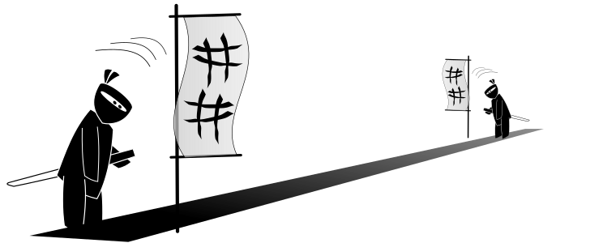

Cory Fisher
Front-End Ninja

Featured Work
Item Catalog
https://github.com/coryjamesfisher/Udacity-FSWD-Item-Catalog-Project
Linux Server Config
https://github.com/coryjamesfisher/Udacity-FSWD-Linux-Server-Config
Neighborhood Map
https://github.com/coryjamesfisher/Udacity-FSWD-Neighborhood-Map-Project
Movie Site
https://github.com/coryjamesfisher/Udacity-FSWD-Movie-Site-Project
Portfolio Site
https://github.com/coryjamesfisher/Udacity-FSWD-Portfolio-Project